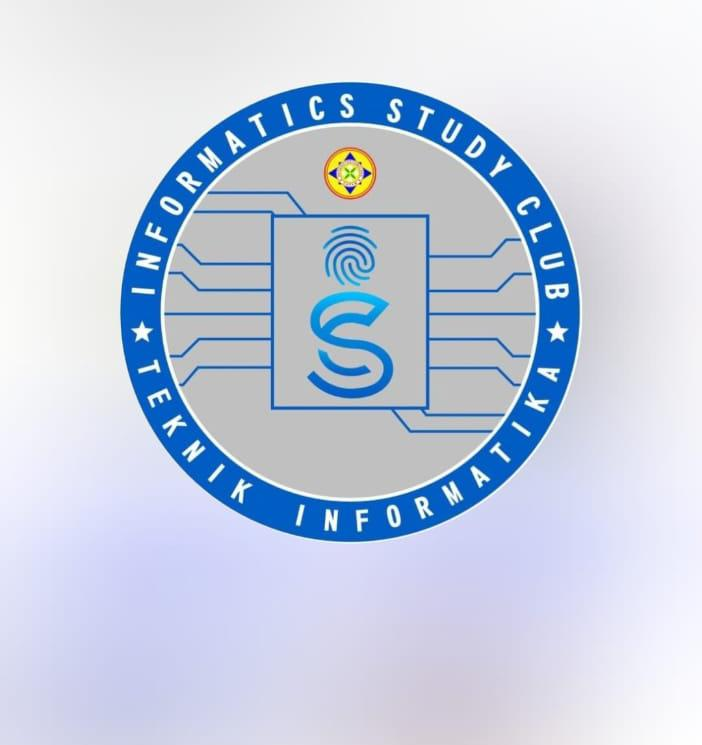

Teknik Informatika
Walman dan Andini
Informatics Study Club (ISC) adalah komunitas mahasiswa Teknik Informatika yang fokus pada pengembangan skill di bidang web development, programming, UI/UX, dan teknologi lainnya.
Menjadi wadah pembelajaran dan kolaborasi untuk mencetak mahasiswa IT yang kompeten dan siap kerja.
1. Mengadakan pelatihan dan workshop rutin.
2. Membangun proyek bersama untuk portofolio.
3. Menjalin relasi dengan industri dan alumni.